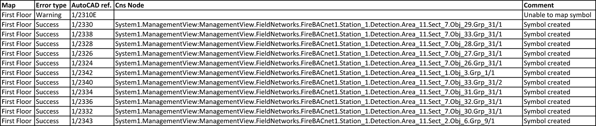

Advanced CAD Importer Log Files
After importing an advanced CAD file, you can analyze two report log files.
Summary Log File
[drive]:\Users\[username]\AppData\Local\Temp\AdvancedCadImport_mm-dd-yyyy_nn.txt
This log provides a summary report with errors and warnings. For example: Advanced Cad Import Log
Start Time : 02/22/2019 12:30:53
Import completed in 0 h 1 m and 20 s
Maps selected for import : 2
Maps imported successfully : 1
Maps imported with warnings : 1
Maps failed to import : 0
________________________________________________________________________
Imported with success:
graphics\First Floor\First Floor
Symbols created: 11
Symbols deleted: 0
Symbols moved: 0
Symbols unchanged: 0
Symbols not resolved: 1
Unable to map symbol object name: '3902/13E*' - CNS resolved: '3902/13E_'
…
NOTE: The CNS resolved comment indicates the substitution of special characters applied before comparing the string. See 4 – Check Objects Identification in System Browser.
________________________________________________________________________
Detailed Log File
[drive]:Users\[username]\AppData\Local\Temp\AdvancedCADImport_Results yyyymmdd hhmmss.txt
This CSV log contains a record of all objects processed and the corresponding System Browser nodes.
NOTE: In the example below, note the error in mapping one of the objects due to the slightly different content of the AutoCAD attribute (the letter “E” after the numeric code). In the import setting (see 3 – Select the Object Blocks, and Identification Attributes), you can correct such a problem by using the remove-character option to delete the “E” character from the comparing string.
